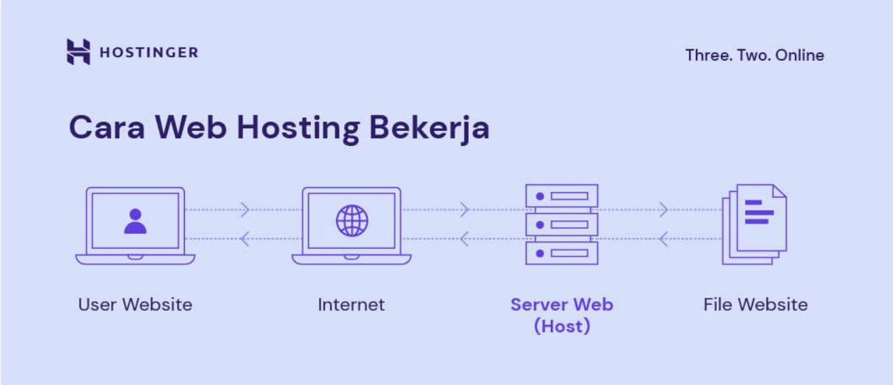

Definisi dan Cara Kerja Hosting
1. Definisi Hosting
Hosting (atau Web Hosting) adalah layanan penyewaan ruang penyimpanan (space) pada komputer server yang memungkinkan semua file dan data (website Anda) untuk disimpan, diakses, dan diterbitkan secara online di Internet.
- Server: Server adalah komputer fisik berkinerja tinggi yang dioperasikan 24 jam sehari oleh penyedia hosting. Server ini menyediakan sumber daya (resource) seperti space penyimpanan (SSD/NVMe), RAM, dan CPU untuk menjalankan website Anda.
- Analogi: Jika Domain adalah alamat rumah Anda, maka Hosting adalah tanah dan bangunan tempat file-file website Anda tinggal. Keduanya harus dimiliki agar website dapat berfungsi penuh.
2. Cara Kerja Hosting
Cara kerja hosting sangat erat kaitannya dengan Domain dan DNS:
- Alokasi Ruang: Penyedia hosting mengalokasikan ruang disk dan sumber daya (RAM, CPU) di servernya untuk file-file website Anda.
- Penyimpanan File: Semua file situs web (kode, gambar, teks) disimpan di server tersebut.
- Pengarahan Alamat (via DNS): Ketika domain Anda diakses, DNS menerjemahkan domain tersebut menjadi Alamat IP server hosting Anda.
- Pengiriman Respons: Browser pengunjung terhubung ke Alamat IP tersebut. Server hosting menerima permintaan dan mengirimkan file-file website tersebut melalui internet kembali ke browser.
- Tampilan: Browser merender file yang diterima menjadi halaman web yang utuh.

Ilustrasi Cara Kerja Server Hosting sebagai pusat data yang menyimpan file website.
3. Jenis-jenis Hosting
Jenis hosting yang dipilih menentukan seberapa banyak sumber daya yang Anda terima. Ada lima jenis utama yang umum digunakan:
- Shared Hosting
- Berbagi satu server fisik dan resource (RAM/CPU) dengan banyak website lain. Biaya paling murah.
- Cocok Untuk: Website pribadi, blog sederhana, startup baru.
- Cloud Hosting
- Website tersebar di jaringan banyak server (cloud), menawarkan skalabilitas instan dan uptime yang sangat tinggi.
- Cocok Untuk: Website besar, e-commerce, traffic tinggi.
- VPS Hosting
- Mendapat server virtual pribadi dengan resource yang dijamin (dedicated), meskipun berada di satu server fisik.
- Cocok Untuk: Website berkembang, pengembang yang butuh kontrol.
- WordPress Hosting
- Lingkungan server yang dioptimalkan khusus untuk performa dan keamanan WordPress.
- Cocok Untuk: Website yang menggunakan platform WordPress.
- Dedicated Server Hosting
- Menyewa seluruh server fisik secara eksklusif. Memberikan kontrol penuh dan performa maksimal.
- Cocok Untuk: Perusahaan besar, website dengan traffic masif.